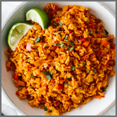
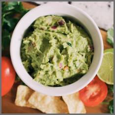

Mexican Rice
Traditional recipe with a twist.
Rating: 4 of 5 Stars

Street tacos are delicious, amazing, and oh so mouthwatering! Bite into tender steak, zesty lime flavor with a hint of spice and add on tomatoes, avocado, and onions for a savory bite you are going to love!
These street tacos are completely jam-packed with flavor and they are so easy to make. I love how the meat is so tender and juicy and only takes an hour to marinate! If you absolutely love tacos like me, try out these other amazing taco recipes! These taco-stuffed avocados, Baja fish tacos, and ground beef tacos will not disappoint!!

Traditional recipe with a twist.
Rating: 4 of 5 Stars

Just the right amount of spice.
Rating: 5 of 5 Stars

Fresh and healthy.
Rating: 4 of 5 Stars

Easy to make and so good.
Rating: 4 of 5 Stars